You are never confused about where you are. Logging a set is one glance and one tap.
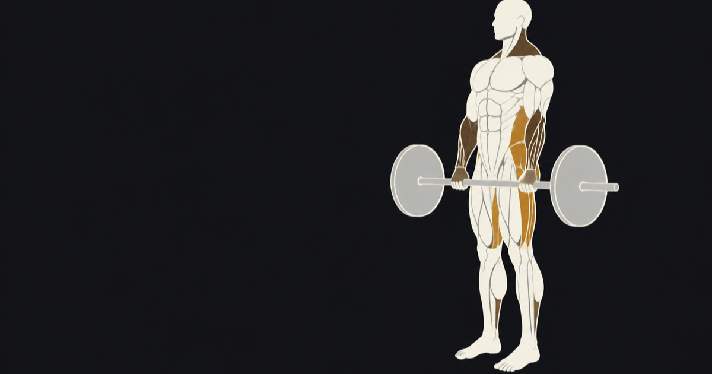
Five tabs, and no core action more than two taps away. One job per screen: Today is what you are doing right now, Progress is whether you are getting stronger. Nothing gets a second job because there was space.
Set the weight, tap the rep you did. The rest timer starts itself, the next set is queued, and the brass pill already shows what you did at this position last time. No forms, no modals, no keyboard.
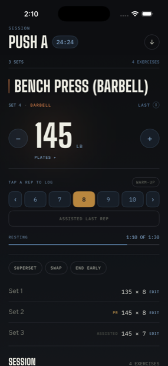
Every implement is its own row, the way Strong and Hevy write them, so Bench Press (Barbell) and Bench Press (Dumbbell) are different lifts because they are. Search reaches aliases too, so "military press" finds the overhead press and "db incline" finds the dumbbell incline.
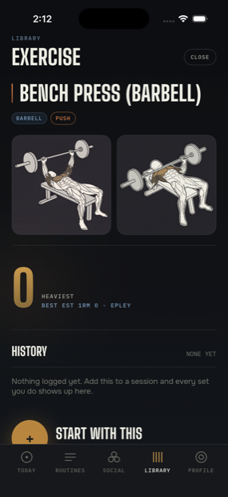
A single still cannot show a movement: one picture of a bench press is a man lying down. So every illustrated lift is a pair, drawn at the two ends of the range of motion, with the worked muscles filled in brass and the equipment stepped back so the lifter reads in front of the rig.
An isometric gets one frame, because a hold has no second extreme. 109 movements are drawn so far, and the rest carry a clean placeholder rather than a blank.
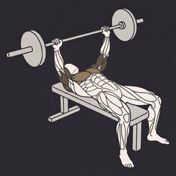
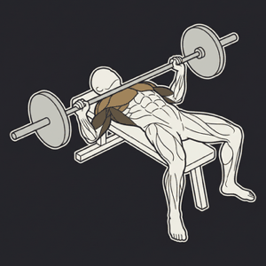
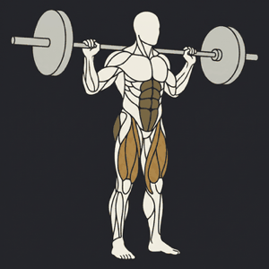
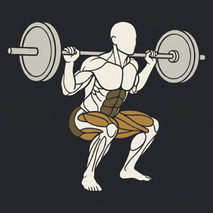
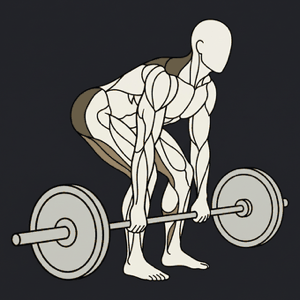
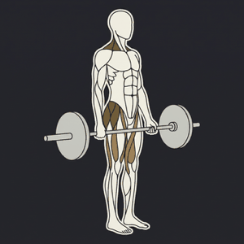
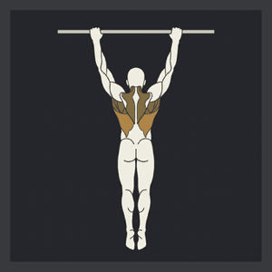
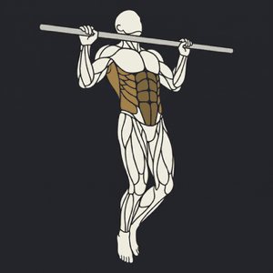
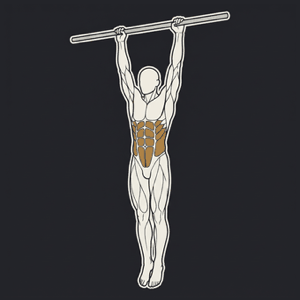
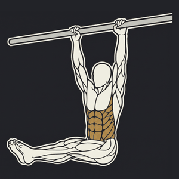
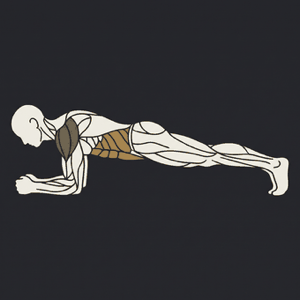
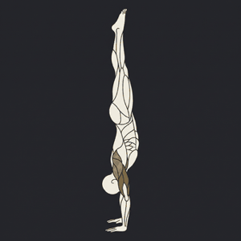
The movement, the set number, the rest countdown and the session clock, all live, rendered by iOS with no process running. Put the phone down mid rest and the numbers are still true when you pick it up.
It is a display, not a control. iOS demands authentication before a button on a locked screen does anything, so a control there would work only when you had just unlocked. A control that silently works half the time is worse than no control, so the card shows and the tap lives in the app. On Apple Watch, where no authentication step exists, logging works from the wrist.
Top weight is not comparable across rep ranges: 225 for five and 245 for a single are nearly the same performance. Every set is normalised to an estimated one rep max so the line means something.
Sessions are irregular. Spacing them evenly would draw a three week layoff as a single step, which flatters a comeback and hides a plateau. Gaps are drawn as gaps.
Bars per week, coloured by what the movement trains, so the shape of a training block is legible at a glance. Warm-ups are excluded, which is the whole reason warm-ups are marked.
Computed from your logged sets rather than stored and hoped for, so they can never drift from what you actually did. A bodyweight lift ranks by reps and a hold by its longest time.
Brass for trained, steel for a rest day you declared, grey for nothing logged. Tap any day to see the sets. Two sessions in a day are two sessions and one day.
A declared rest day keeps a streak alive without advancing it. Only an unexplained empty day breaks one, because resting is part of training and skipping is not.
Groups only. No followers, no friend graph, no feed, and no messaging at all. You join a group by opening a link somebody sent you in whatever app you already use.
It breaks when somebody's personal streak breaks and for no other reason. Log a workout or declare a rest day and you are fine. The bar is logging, not training.
Pair with a 6 character code that expires in a day, tick exactly which categories they may read, and change your mind whenever. Untick one and those rows are deleted, not hidden. A trainer suggests routines; accepting is what makes one yours.
Bench, squat and deadlift, top ten, with the video. Your phone checks once that you are at the gym when you post, and stores no location. Nothing claims to verify the weight, which is why reporting and blocking exist.
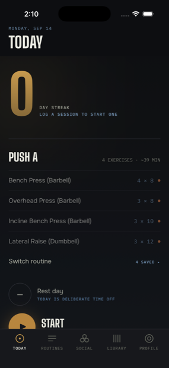
You do not need an account. Workouts, routines, history, records and streaks all work with no sign-in and no signal. An account is needed only for groups, a trainer, and gym boards.
A permission is what uploads a category, and revoking it deletes those rows rather than hiding them behind a rule. A user with no trainer and no group uploads nothing at all.
No advertising, no analytics SDKs, no tracking. Deleting your account removes everything on the server and does not touch the log on your phone, because that was never the account's to begin with.
A plank is not eight reps at zero pounds. Forty eight holds, carries and cardio drills log seconds, count up or down, and read back as a length everywhere.
Six to ten in half steps, the RIR anchored scale, and when it is off it does not render at all. There is a calculator too, which explains the scale rather than assuming you know it.
Switch it on and it stays on until the movement changes, because nobody alternates warm-up and working sets. They carry no volume and never set a record.
What to load each side, drawn to scale, and the reverse. Offered only under a barbell, because a per side number under a cable machine is arithmetic for a bar that is not there.
Switching reformats everything, including your whole history, on a half kilo grid because that is what a gym actually loads. One conversion, one place.
Log from your wrist with the crown or a thumb, with heart rate and real measured energy. The phone stands down while it runs so nothing is counted twice.
Pair two movements and logging hops between them. Rest starts at the end of the round rather than in the middle, because that is what a superset is.
Keep a split in rotation and a shelf of everything else. Today offers the next one in the cycle, and an improvised session is never scored against a plan it never had.
A card over your own photo, with what you choose on it. Your numbers are optional, because not everybody puts those on a story.